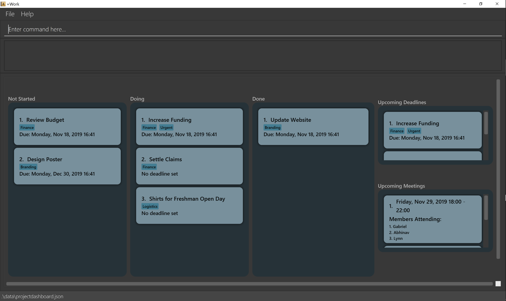

By: CS2103T-T12-1 Since: Sept 2019 Licence: MIT
1. Introduction
+Work is a project management tool that allows NUS project leaders in charge of a small group (less than 20 people) to successfully achieve their objectives for their project. +Work is a one-stop application to help the leader manage their members, meeting times, task allocation as well as personal claims for any equipment purchased. +Work is perfect for those who prefer to work with a Command Line Interface (CLI) while still having the benefits of a Graphical User Interface (GUI). Happy working!
2. Quick Start
-
Ensure you have Java
11or above installed in your Computer. -
Download the latest
+Work.jarhere. -
Copy the file to the folder you want to use as the home folder for your +Work.
-
Double-click the file to start the app. The GUI should appear in a few seconds.
 -
Type the command in the command box and press Enter to execute it.
e.g. typinghelpand pressing Enter will open the help window. -
Some example commands you can try:
-
add-member m/Abhinav Ramnath: Adds a member with name "Abhinav Ramnath" to the project. -
add-task tn/Finish up milestone setting: Adds a task with name "Finish up milestone" to the project. -
assign-member ti/5 mi/SL: Assigns the project member "Seah Lynn" (With member id "SL"), to the fifth task. -
doing-task ti/3: Changes status of task three todoing:
-
-
Refer to Section 3, “Features” for details of each command.
3. Features
Command Format
-
The command begins with the type of command to be executed
-
Example: in
remove-member mi/MEMBER_ID, remove member is the type of command
-
-
The words in UPPER_CASE corresponds to the parameters given by the user
-
Example: In
add-member mn/MEMBER_NAME, MEMBER_NAME is the input specified by the user, such as: add-member mn/Gabriel Seow
-
-
The user specifies the type of parameter given through a prefix. The list of allowed prefixes can be found in the table below:
-
Parameters can be given in any order
-
Example: If the command specifies
[t/TASK_NAME] [m/MEMBER_NAME],
[m/MEMBER_NAME] [t/TASK_NAME]is also acceptable`
-
-
Date and Time is specified in the format
dd-mm-yyyy hh:mm
3.1. Universal Commands
3.1.1. Accessing project dashboard page: home
This brings you to the project dashboard page
Format: home
3.1.2. Accessing time management page: calendar
This brings you to the time management page where calendar and meeting times are displayed
Format: calendar
3.1.3. Accessing settings page: settings (Coming in v1.3)
This brings you to the settings page
Format: settings
3.2. Member-related Commands
3.2.1. Add a member: add-member
To add a member to the list of team members in +Work, use the command 'add-member' following the format below.
Format: add-member mn/MEMBER_NAME mi/MEMBER_ID mt/TAGS
Example: add-member mn/Gabriel Seow mi/GS mt/Programmer
3.2.2. List existing members: list-members
To get a list of all members added to +Work, used the command 'list-members' following the format below.
Format: list-members
Example: 'list-members'
3.2.3. Remove a member: remove-member
To remove a member from the project, and subsequently remove him from associated tasks, use the 'remove-member' command in the format below.
Format: remove-member [mi/MEMBER_ID]
Example: 'remove-member mi/GS'
3.2.4. Assign a task to a member: assign
To assign a task to a specific team member, use the 'assign' command in the format below.
Format: assign ti/TASK_ID mi/MEMBER_ID
Example: 'assign ti/1 mi/GS'
3.2.5. Remove a task from a member: fire
To remove a task from a specific team member, use the 'fire' command in the format below.
Format: fire ti/TASK_ID mi/MEMBER_ID
Example: 'fire ti/1 mi/GS'
3.3. Task-related Commands
3.3.1. Add a task: add task
Adds a task into project dashboard
Format: add-task [t/TASK_NAME] [m/MEMBER_NAME]
Example:
-
add task t/Finish up milestone setting m/Gabriel Seow
A new task will be added to the project dashboard
3.3.2. Set a task status to ‘Doing’: doing
Updates task status to ‘Doing’
Format: doing-task [ti/TASK_ID]
Example:
-
doing-task ti/3
Marks the status of task 3 as doing
3.3.3. Set a task status to ‘Done’: done
Updates task status to ‘Done’
Format: done-task [ti/TASK_ID]
Example:
-
done-task ti/2
Marks the status of task 2 as done.
3.3.5. Remove a task: remove-task
Removes a task from the dashboard
Format: remove-task [ti/TASK_ID]
Example:
-
remove-task 2
Removes the 2nd task in the dashboard
3.3.6. Set deadline for a task: deadline-task
Sets deadline for existing tasks on dashboard
Format: deadline-task [ti/TASK_ID] [at/DEADLINE] [at/ dd-mm-yy hh:mm]
| Remember to input using the 24 hour time format |
Example:
-
deadline-task ti/21 at/21-09-19 15:00
Deadline for task 21 will be specified as21-09-19 15:00
3.4. Calendar Commands (Coming in v1.3)
3.4.1. Add a members calendar: import-calendar
Format: import-calendar [mi/MEMBER_ID] [c/PATH_TO_ICS]
Example:
You can add your project’s member John Doe’s ics file like this,
-
import-calendar mi/JD c/data/john_ics_file
Adds a calendar to John’s profile
3.4.2. Generate free time across all calendars uploaded: generate-timings
Format: generate-timings
Example:
-
generate-timings
Generates a grid showing the number of people who can make it for a particular time slot during the week (mock-up needed)
3.4.3. Add a meeting: add meeting
Format: add-meeting [at/ dd-mm-yyyy hh:mm] [l/LOCATION]
to add a new meeting
Example:
-
add-meeting at/10-10-2018 19:00 l/COM2-0204
User chooses the meeting time from the grid displayed from generate timings commands (3.4.2) . A meeting is added to the internal calendar of the application, which will be displayed on the dashboard.
3.5. Inventory Commands
3.5.1. Adding an inventory: add-inventory
Adds an inventory item bought or required for a specific project task.
Format: add-inventory [ti/TASK_ID] [i/ITEM_NAME] [mi/MEMBER_ID] [p/PRICE(optional)]
Examples:
-
add-inventory ti/2 i/Mahjong Paper mi/3 p/8.50
Adds the item “Mahjong paper” for $8.50 to the inventory list. This item is tagged to task 2 and was paid for by member 3. -
add-inventory ti/4 i/scissors mi/1
Adds the item “scissors” to the inventory list. The item is tagged to task 4 and is provided by member 1 for no cost.
3.5.2. Deleting an inventory: delete inventory
Deletes an inventory item.
Format: delete-inventory [ii/ITEM_ID]
Examples:
-
delete-inventory ii/3
Deletes the third item from the inventory list
3.5.3. Generating a report of inventory by task: generate inventory /task
Generates a PDF report containing all inventories grouped by tasks for easier sharing.
Format: generate-inventory /task
Examples:
-
generate-inventory /task
File explorer pops up, triggering a message to allow the user to save the pdf file in the computer.
3.5.4. Generating a report of inventory by people: generate inventory /person
Generates a PDF report containing all inventories grouped by members for easier understanding of claims.
Format: generate-inventory /person
Examples:
-
generate-inventory /person
File explorer pops up, triggering a message to allow the user to save the pdf file in the computer.
3.6. Settings Commands (Coming in v1.3)
3.6.1. Switching the theme of +Work: theme
This command toggles the theme of +Work between light and dark to suit your viewing preferences.
| By default, the theme is set to dark. |
Format: theme light
Examples:
-
theme light
Switches to the light theme -
theme dark
Switches to the dark theme
3.6.2. Switching the clock format of +Work: clock
This command toggles the clock format of +Work between 24 hour and 12 hour format. By default, the clock format is set to 24 hour.
| This does not affect the input format of deadlines for tasks. They still need to be entered in 24 hour format!. |
Format: clock twenty_four
Examples:
-
clock twelve
Switches to the 12 hour clock -
clock twenty_four
Switches to the 24 hour clock
3.7. Saving the data
Project data is saved in the hard disk automatically after any command that changes the data.
There is no need to save manually.
4. FAQ
Q: Can I use file formats other than ics for the calendar feature?
A: No, the file format has to be in ics folder, downloaded either from NUSmods or Google Calendar.
Q: Can I export the claims report as a word document?
A: No, the application only supports exporting of files in PDF format.
Q: What if the calendar cannot find a timing where everyone is free?
A: There will be a grid showing the number of available members by time, so it will be easier for the user to choose the best possible time for the meeting.
Q: My project has a budget, does the application help me keep track of the projects financial status?
A: Using /inventory the application can keep track of current expenses for each task and the member who purchased it, however, there are currently no accounting services available.
Q: Some of the tasks for my project require sub tasks to be completed, is there a way to add them?
A: Ideally since the user is the project leader, they should only see the main tasks to be accomplished for the project. This would help facilitate their managerial role within the project. Hence, the application does not support subtasks.
Q: How can I add multiple users to the same task?
A: Since +Work is member-oriented, the application displays information according to members. Hence, you have to assign task to all the different members that are working on the task.
Q: What happens when a task has been completed?
A: You can mark the task as ‘Done’, which will move the task to the bottom of the task list. In the case where you do not want to keep the task in the list, using ‘Remove Task’ will delete it.
5. Command Summary
-
add-inventory [i/NAME] [p/PRICE] [ti/TASKID] [mi/MEMBER_ID]: Add an inventory -
add-meeting [at/ dd-mm-yyyy hh:mm - hh:mm] [l/LOCATION]: (Coming in v1.3) Add a meeting -
add-member [mn/MEMBER_NAME] [mi/MEMBER_ID] [mt/MEMBER_TAG]: Add a member -
add-task [t/TASK_NAME] [m/MEMBER_NAME]: Add a task -
assign [ti/TASK_ID] [mi/MEMBER_ID]: Add a task to a member -
calendar: Switch to the time management page -
clock twelve: (Coming in v1.3) Switch to the 12 hour clock -
clock twenty_four: (Coming in v1.3) Switch to the 24 hour clock -
deadline-task [ti/TASK_ID] [at/ dd-mm-yy hh:mm]: Assign a deadline to a task -
delete-inventory [ii/ITEM_ID]: Delete an inventory -
doing-task [ti/TASK_ID]: Mark a task asdoing -
done-task [ti/TASK_ID]: Mark a task asdone -
fire-member [ti/TASK_ID] [mi/MEMBER_ID]: Remove a task from a member -
generate-inventory /task: Generate report of inventory by task -
generate-inventory /person: Generate report of inventory by person -
generate-timings: (Coming in v1.3) Generate free times among members -
home: Switch to the project dashboard -
help: Access the help window -
import-calendar [mi/MEMBER_ID] [c/PATH_TO_ICS]: (Coming in v1.3) Import a calendar -
list-members: List all members -
list-tasks: List all tasks -
remove-member [mi/MEMBER_ID]: Remove a member -
remove-task [ti/TASK_ID]: Remove a task -
settings: Switch to the settings configuration page -
theme dark: (Coming in v1.3) Switch to the dark theme -
theme light: (Coming in v1.3) Switch to the light theme